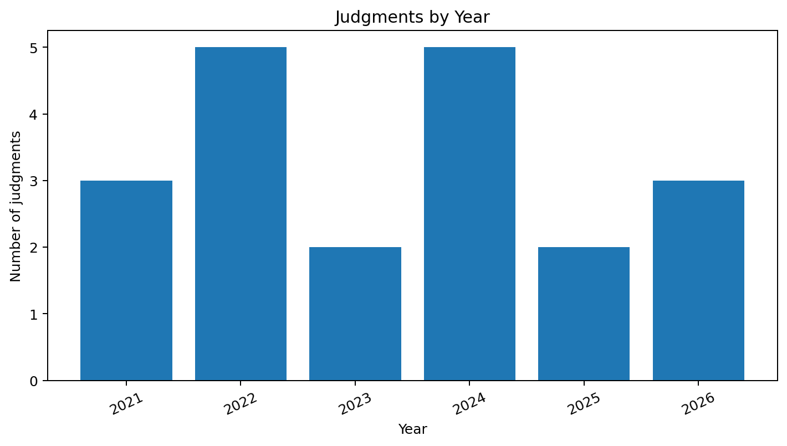
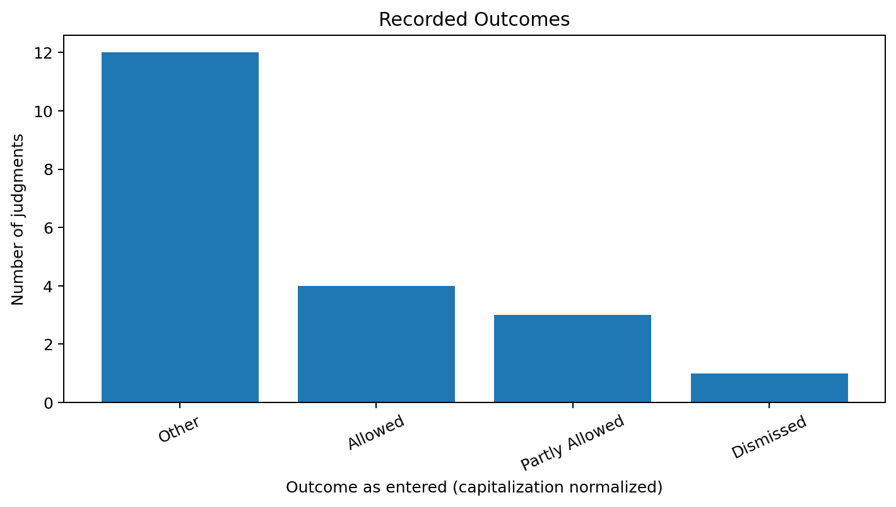
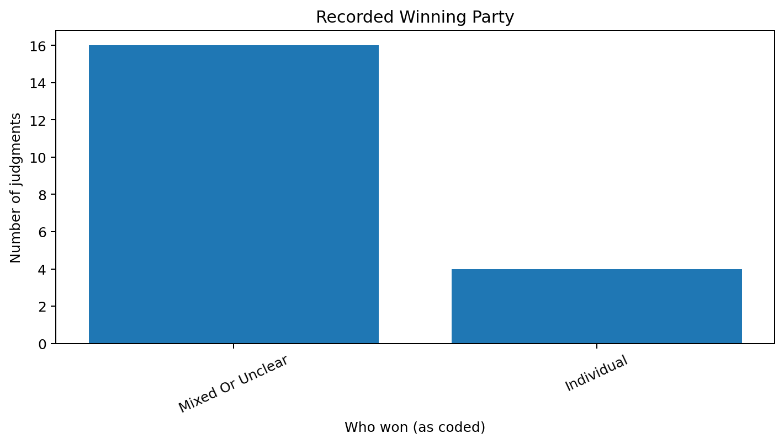

About the topic
Section 125 of the Code of Criminal Procedure, 1973 provides a summary maintenance remedy for eligible dependants who cannot maintain themselves. This page summarizes the case data entered in the team's workbook. It does not replace reading the full judgments.
Visual analysis

Counts based on the Year column in the supplied workbook.

Outcome labels counted as entered, with capitalization standardized.

Counts based on the Who won column in the supplied workbook.
Dataset
The table below reproduces selected fields from the supplied spreadsheet. Check all case details, source links and coding against the official judgment before submission.
| Case name | Citation / case number | Date | Year | Outcome | Who won | Issue | Holding |
|---|---|---|---|---|---|---|---|
| Sundar Lal Saini v. Meena Saini | CRL.REV.P 129/2021 | 09-11-2021 | 2021 | Partly allowed | Mixed or unclear | Whether maintenance was properly assessed for wife and children, including an adult son. | court discussed Section 125 relief and parental responsibility for children's education despite majority where financial independence had not been achieved. |
| Urvashi Aggarwal & Ors v. Inderpaul Aggarwal | CRL.REV.P 549/2018 | 05-10-2021 | 2021 | Dismissed | Mixed or unclear | Whether the mother could seek contribution to the maintenance and education of a son who had attained majority. | The court held that attaining majority does not automatically absolve a father of responsibility for a child's education where the child remains financially dependant; application dismissed. |
| Sumairvijay Chandravijay Singh v. Srmiati Preetika Sumairvijay Singh | R/SCR.A/7843/2018 | 28-10-2021 | 2021 | Other | Mixed or unclear | Whether maintenance granted to wife and children was appropriate. | Court considered the maintenance award in light of the parties circumstances and reffered to the governing principles in Rajnesh v. Neha. |
| Amit Sharma v. Shelkka Sharma & Ors. | CRL.REV.P.71/2022 | 31-05-2022 | 2022 | Partly allowed | Mixed or unclear | Whether a revisional court could reassess maintenance and the underlying domestic relationship. | Revisional court should not reappreciate evidence as an appellate court; it should focus on material illegality or irregularity and the threshold relationship relevant to maintenance. |
| Sarita Baksshi v. State & Anr. | CRL.REV.P. 792/2018 | 03-06-2022 | 2022 | Other | Mixed or unclear | Whether maintenance was justified under section 125 and how the provision's social-welfare objective applies. | The court explained section 125's object and considered whether the impugned maintenance decsion warranted revisional interferance. |
| Babita v. Munna Lal | CRL.REV.P. 1001/2018; 2022/DHC/003778 | 22-08-2022 | 2022 | Other | Mixed or unclear | What ingredients must be proved for mainenance and Section 125(4) disentitles a wife. | The court summarised the statutory requirements, including inability to maintain herself, sufficient means, neglect/refusal and the disqualifications undeer section 125(4) |
| Anju Garg v. Deepak Kumar Garg | Supreme Court judgement (2022) | 2022 | 2022 | Other | Mixed or unclear | Whether maintenance should be denied or limited by the wife's capacity to earn and the husband's financial circumstances. | Supreme Court reiterated that a wife's potential earning capacity aone is not the same as actual sufficient income; maintenance mmust be assessed on evidence and relevant circumstances. |
| Chanchal Verma v. Anurag verma | CRL.REV.P.980/2022 | 20-09-2022 | 2022 | Other | Mixed or unclear | What foundation requirements must be established for a wife to obtain maintenance. | The court restated the requirements for marital relationship, inability to maintain herself, sufficient means and negelct/refusal, read purposively as a social-justice remedy. |
| Roopa Soni v. Kamalnarayan Soni | Supreme Court judgement (2023) | 2023 | 2023 | Allowed | Individual | Whether a divorced wife can seek maintenance and the effect of the statutory definition of “wife” | Supreme Court interpreted Section 125 beneficially and clarified the availability of maintenance to a divorced wife who has not remarried, subject to statutory requirements. |
| Mohammad Faruq & Ors. v. Salima | RPFC No. 200027/2022; NC:2023:KHC-K:7024 | 04-09-2023 | 2023 | Allowed | Individual | Whether a stepmother can claim maintenance from her stepson under Section 125. | The court held that the term “mother” in Section 125 includes a stepmother; the relevant question is whether the parent is unable to maintain herself. |
| Mr. Kunwer Fahmed Alam Ariyana v. Ms. Mamtesh Alam v. Mamtesh | CRL.REV.P. 1334/2024 | 12-12-2024 | 2024 | Other | Mixed or unclear | Whether a wife’s reconversion from Islam disentitles her from maintenance under Section 125. | The court considered whether apostasy/reconversion disentitles a wife from maintenance and examined the award to the wife and minor child. |
| Mohd. Abdul Samad v. State of Telangana | Criminal Appeal No. 2842 of 2024; 2024 INSC 506 | 10-07-2024 | 2024 | Allowed | Individual | Whether a divorced Muslim woman can claim maintenance under Section 125 CrPC despite the 1986 Act. | Supreme Court held that the remedy under Section 125 CrPC remains available to a divorced Muslim woman; the 1986 Act does not extinguish this secular remedy. |
| X v. Y | Supreme Court judgment, | 08-07-2024 | 2024 | Other | Mixed or unclear | How maintenance proceedings under Section 125 interact with other matrimonial proceedings and remedies. | The Court considered the parties’ matrimonial dispute alongside a Section 125 maintenance claim; consult the linked judgment for the precise operative directions. |
| Parveen Kumar v. State of Himachal Pradesh | Supreme Court judgment | 23-09-2024 | 2024 | Other | Mixed or unclear | Whether maintenance proceedings and related historical matrimonial litigation justified interference with the order under challenge. | Supreme Court considered the Section 125 proceeding within a long-running matrimonial dispute; outcome should be coded against the operative order in the full judgment. |
| Akanksha Arora v. Tanay Maben | SLP (Crl.) No(s). 15909 of 2023 | 04-12-2024 | 2024 | Other | Mixed or unclear | Whether interim maintenance fixed by the Family Court required interference. | Supreme Court dealt with a challenge arising from interim maintenance fixed in Section 125 proceedings; operative order should be checked before coding final outcome. |
| Rina Kumari/ Rina Devi/ Reena v. Dinesh Kumar Mahto/Dinesh Kumar Mahato | 2025 INSC 55; Criminal Appeal arising from SLP (Crl.) No. 10991 of 2018 | 10-01-2025 | 2025 | Allowed | Individual | Whether a wife’s refusal to comply with a decree for restitution of conjugal rights automatically bars maintenance under Section 125(4). | Supreme Court examined the Section 125(4) bar and the circumstances in which a wife may be denied maintenance; a restitution decree alone does not automatically resolve the statutory inquiry. |
| Sukhdev Singh v. Sukhbir Kaur | Supreme Court judgment, 12-02-2025 | 12-02-2025 | 2025 | Other | Mixed or unclear | Relationship between the summary maintenance remedy and a wife’s separate statutory maintenance remedy. | Supreme Court discussed the summary and efficacious nature of Section 125 proceedings alongside maintenance under the Hindu Adoptions and Maintenance Act; include as related only insofar as the judgment substantively discusses Section 125. |
| Neha Lal v. Abhishek Kumar | Supreme Court judgment, 20-01-2026 | 20-01-2026 | 2026 | Other | Mixed or unclear | Whether the Section 125 maintenance dispute and related matrimonial proceedings required further directions. | Supreme Court addressed a maintenance claim filed under Section 125 and the related proceedings; confirm the exact final relief from the full order before coding the outcome. |
| Shephali Chakraborty v. State of West Bengal | 2026 INSC 621 | 03-06-2026 | 2026 | Other | Mixed or unclear | How the social-welfare purpose of Section 125 compares with other statutory frameworks. | Supreme Court described Section 125 proceedings as an ex ante social-welfare measure intended to prevent destitution and protect the dignity of dependants. |
| Sujata Kumari v. Rahul Kumar | Criminal Appeal (arising out of SLP (Crl.) No. 9661 of 2026) | 20-08-2026 | 2026 | partly allowed | Mixed or unclear | Whether the revisional court could reduce interim maintenance without a proper finding that the original amount was perverse or excessive. | Supreme Court considered limits on interference with interim maintenance and the need for reasons before reducing the amount fixed by the Family Court. |
Method and limitations
The current dataset contains 20 entries transcribed from the team's workbook. It includes multiple courts and mixed source-link types, and some coding fields need review. It is a small, non-random collection and cannot establish overall judicial trends or success rates. Team members should verify court, date, citation, relevance, statutory provision, operative outcome, precedent and official source link for every included judgment.
View data.csv · Download data.xlsx · Read the project README